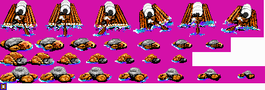
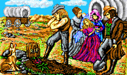

Project Overview
This website documents the findings from the decompilation of The Oregon Trail Deluxe, the 1990 DOS version of the classic educational game. Through reverse engineering and analysis, we've extracted and converted the game's assets to modern formats, providing insights into its technical architecture and design.
The Oregon Trail was developed by MECC (Minnesota Educational Computing Consortium) and is one of the most iconic educational games ever created. The DOS version uses a variety of proprietary file formats and compression techniques that have been decoded through this project.
Technical Specifications
- Original Release: 1990
- Platform: MS-DOS
- Developer: MECC
- Executable: OREGON.EXE (273,648 bytes)
- Compiler: Borland C++ (1991)
- Memory Requirements: 475K (515K with sound)
- Graphics: VGA (16/256 colors)
- Sound: PC Speaker, AdLib, Sound Blaster
Decompilation Project
- Goal: Extract and convert assets to modern formats
- Asset Types: Images, music, sound, text, animations
- File Formats: GXL, PC8, PC4, XMI, SND, CTR, ANI, etc.
- Modern Formats: PNG, MIDI, WAV, JSON, UTF-8
- Tools: Python-based extraction and conversion utilities
File Formats
The Oregon Trail Deluxe uses a variety of proprietary file formats to store its assets. Understanding these formats was crucial to extracting and converting the game's content.
GXL (Graphics Library)
The main archive format used to store most game assets. OREGON.GXL contains images, sounds, music, and text files used throughout the game.
Structure:
- Header section (0x00-0x88): Contains metadata about the file
- File table (0x89-?): List of files contained in the archive
- File data: Raw file content at the offsets specified in the file table
PC8/PC4 (Image Files)
Proprietary image formats used for game graphics. PC8 files are 8-bit (256 colors) while PC4 files are 4-bit (16 colors).
Features:
- RLE (Run-Length Encoding) compression
- Embedded color palette
- Header with dimensions and metadata
- Similar to PCX format but with proprietary modifications
// PC8Image class excerpt from convert_pc8.py
class PC8Image:
"""Class representing a PC8 image file.
Encapsulates the parsing, processing, and conversion of PC8-format
image files to PNG format.
Attributes:
width: Image width in pixels
height: Image height in pixels
bytes_per_line: Bytes per scan line (may include padding)
palette: Color palette for the image (256 RGB triplets)
image_data: Uncompressed pixel data for the image
"""XMI (eXtended MIDI)
Music format used by the Miles Sound System. XMI files contain MIDI music data with extensions for game-specific features.
Structure:
- FORM:XDIR chunk: Contains metadata about the file
- CAT:XMID chunk: Contains one or more songs
- TIMB chunk: Instrument definitions
- EVNT chunk: Note and timing data
XMI files use a different timing mechanism than standard MIDI, with delays stored as summed 7-bit values rather than concatenated bits.
// XMI format excerpt from XMI_format.md
The eXtended MIDI file format is used by the Miles Sound System (MSS) for storing game music.
File format:
- FORM (type XDIR)
- INFO
- CAT (type XMID)
- FORM (type XMID) - first song
- TIMB
- EVNT
- FORM (type XMID) - second song (optional)
- TIMB
- EVNTSND (Sound Files)
Simple sound format used for sound effects.
Specifications:
- Raw 8-bit unsigned PCM audio
- Mono channel
- 11025 Hz sample rate (standard PC speaker rate)
- No header, just raw sample data
// SND conversion excerpt from convert_snd.py
def convert_snd(filepath: Path, output_dir: Path) -> bool:
"""Convert SND to WAV
Args:
filepath: Path to SND file
output_dir: Output directory for converted files
Returns:
bool: True if conversion successful
"""
# Create WAV file
with wave.open(str(output_path), "wb") as wav:
wav.setnchannels(1) # Mono
wav.setsampwidth(1) # 8-bit
wav.setframerate(11025) # Standard PC speaker rate
wav.writeframes(data)CTR (Control Files)
Script/control files that define UI layouts, actions, text, and interactive elements.
Structure:
- Text-based format with numeric commands and parameters
- Commands for positioning, text styling, buttons, and input fields
- References to image files for UI elements
- Defines screen layouts and interactive behaviors
// CTR format excerpt from INTRO1.txt
17, let's load the images
1,1
INTROBUT.PCC
17, clear the screen to gold
6,32 7,32
4,415 5,574
12,0,6
18,2,0,6,1
6,320 7,40
10,IntroductionANI (Animation Files)
Simple animation format that references frames from image files.
Structure:
- Text-based format with frame coordinates
- References PC8/PC4 files for frame images
- Defines animation sequences and timing
// ANI format excerpt from BANKS.json
{
"image_file": "BANKS.PCC",
"frame_count": 2,
"frames": [
{
"coordinates": [
{
"x": 0,
"y": 0
}
],
"dimensions": [
{
"width": 110,
"height": 74
}
]
},
// Additional frames...
]
}Extracted Assets
The decompilation project has successfully extracted a wide variety of assets from the original game. Below are examples of the different types of content recovered.
Images
The game contains hundreds of images for backgrounds, UI elements, and game objects. These were stored in PC8 (256-color) and PC4 (16-color) formats.


Music
The game features several music tracks stored in XMI format, which were played using the Miles Sound System's MIDPAK driver.
LAND0.MID
Location-specific background music
DEATH.MID
Music played when a party member dies
TITLE_1.MID
Title screen music
Sound Effects
Simple sound effects stored as raw PCM audio in SND files.
GUNSHOT.WAV
Sound of firing a gun during hunting
HITCRITT.WAV
Sound when successfully hitting an animal
CRASH.WAV
Wagon crash sound effect
Animations
The game uses simple animations defined in ANI files, which reference frames from image files.
BANKS.JSON
River crossing animations
{
"image_file": "BANKS.PCC",
"frame_count": 2,
"frames": [
{
"coordinates": [
{"x": 0, "y": 0}
],
"dimensions": [
{"width": 110, "height": 74}
]
},
{
"coordinates": [
{"x": 152, "y": 81}
],
"dimensions": [
{"width": 110, "height": 74}
]
}
]
}
RAFTING.JSON
River rafting animations
WAGONS.JSON
Wagon movement animations

Text and UI Controls
The game's UI layouts and text content are defined in CTR files.
INTRO1.TXT
Introduction screen text
What was it like to cross 2,000 miles of plains, rivers, and mountains in 1848? "The Oregon Trail" allows you relive one of the greatest adventures in American history: the journey taken by thousands of emigrants on the Oregon Trail.
HUNT.JSON
Hunting mini-game interface
{
"metadata": {
"images": [
"huntbut.pcc"
],
"comments": [
"let's load the images",
"Button #1",
"Button #2"
]
},
"ui_elements": [
{
"type": "button",
"properties": {
"group": 0,
"index": 0,
"action": {
"id": 1,
"name": "confirm"
}
}
}
]
}
DEATH.TXT
Death notification screen
Technical Insights
Executable Analysis
The main game executable (OREGON.EXE) is a 273,648-byte MS-DOS MZ executable compiled with Borland C++ (1991). It requires at least 475K of free memory (515K with sound enabled).
The executable references several external resource files:
- OREGON.GXL - Main graphics library
- Sound Drivers: ADLIB.COM, IBMSND.COM, MIDPAK.COM, SBLASTER.COM
- Configuration: OT.CNF, PRODUCT.PF, LEGENDS.LST
Sound System
The game uses the Miles Sound System for music playback, which was a popular audio middleware solution for DOS games. It supports multiple sound cards through different drivers:
- ADLIB.COM - AdLib sound card driver
- IBMSND.COM - IBM PC speaker driver
- MIDPAK.COM - MIDI music driver
- SBLASTER.COM - Sound Blaster driver
Music is stored in XMI format, which is a proprietary extension of the MIDI format developed for the Miles Sound System. It includes features like instrument banks and branch points.
Graphics System
The game supports both 16-color and 256-color VGA modes. Graphics are stored in several formats:
- PC8 - 256-color images with RLE compression
- PC4 - 16-color images with RLE compression
- .16 - 16-color images for animals and objects
- .256 - 256-color images for animals and objects
The game can be forced into 16-color mode with the "-16" command line option, which was useful for systems with limited video memory.
UI System
The game's user interface is defined using CTR (control) files, which contain a sequence of numeric commands with parameters. These files define:
- Screen layouts and dialog boxes
- Text content and styling
- Button properties and actions
- Input fields for user interaction
The CTR format uses a command-based approach where each command has a numeric ID followed by parameters. For example, command 10 defines text content, while command 18 sets text style.
// CTR command types from convert_ctr.py
COMMAND_TYPES = {
1: "image_count",
4: "set_x",
5: "set_y",
6: "position_x",
7: "position_y",
8: "button_properties",
10: "text_content",
11: "input_field",
12: "set_color",
17: "comment",
18: "text_style",
19: "vertical_spacing",
20: "horizontal_spacing",
}